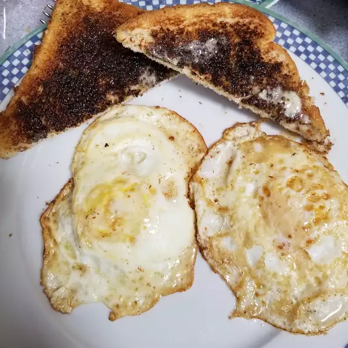

Over Eazy Egg

Description
The goal for a perfectly cooked over easy egg is to have a firm egg white and a runny yolk.
Ingredients
- ½ tablespoon unsalted butter
- 1 large egg
- salt and freshly ground black pepper to taste
Steps
- Melt butter in an 8-inch nonstick skillet or seasoned cast iron skillet over medium heat. Crack the egg into the skillet and cook undisturbed until the egg white is firm and set, but the yolk is still runny and intact, about 1 1/2 to 2 minutes.
- Gently flip the egg with a spatula being careful not to break the yolk. Cook for another 15 to 20 seconds or to your desired doneness, being sure that the yolk remains liquid.
- Transfer the egg to a plate, season with salt and pepper, and serve immediately.